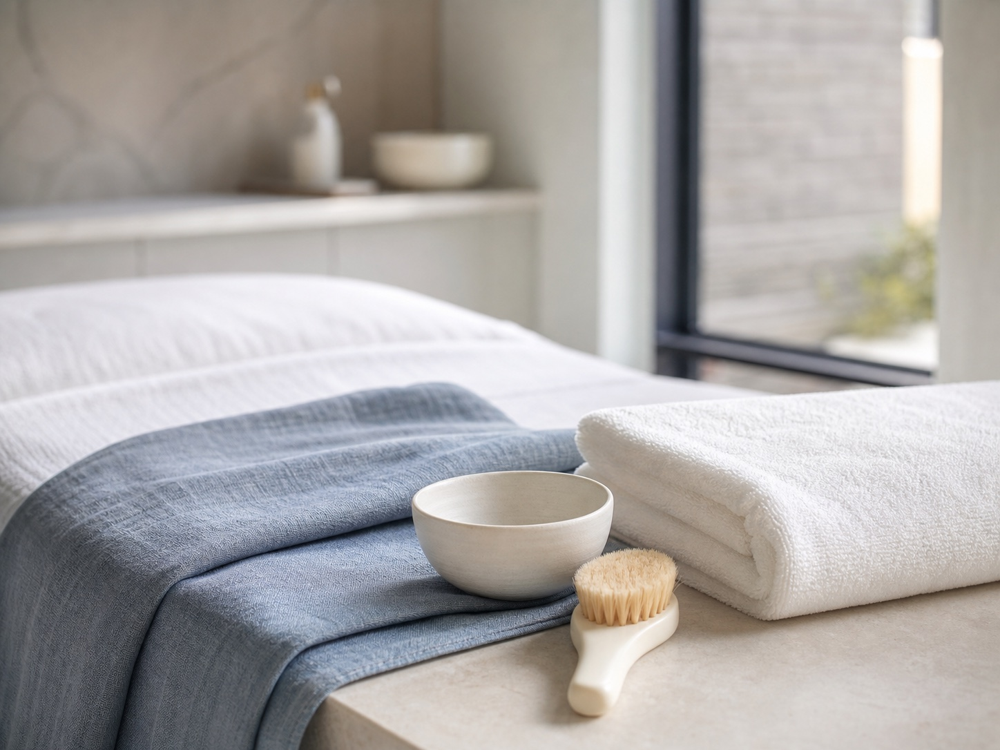

Personal attention
Every visit begins with a conversation about your preferences and what you hope to experience.
A skincare studio in Huntington, New York
Thoughtful facials, skincare, makeup, upper-body massage, and scalp-massage services shaped around you—in a calm, private setting.

The studio approach
Every visit begins with a conversation about your preferences and what you hope to experience.
Services are chosen with care, without pressure, overstatement, or a one-size-fits-all approach.
A clean, calm environment supports an unhurried and comfortable skincare experience.
Services
Personalized services designed to support a polished, restorative experience—always grounded in honest conversation.
A personalized facial experience selected around your preferences and current skincare routine.
02Considered care focused on refreshing the look and feel of your skin without exaggerated promises.
03Practical, personal guidance to help make your everyday routine feel more intentional.
04Refined application that complements your features, preferences, and occasion.
05A comfortable, focused service for a quiet pause within your studio visit.
06A calming addition or focused experience designed for rest and ease.

Meet Martha
Biography placeholder—replace before launch. This space is reserved for Martha’s verified story, approach, training, and credentials. No professional claims have been added without confirmation.
More About the StudioYour visit
Share your preferences, routine, and what would make the visit feel worthwhile.
Together, choose a service approach suited to the experience you are seeking.
Settle into an attentive treatment experience in a calm studio setting.
Leave with practical aftercare suggestions relevant to your selected service.
Frequently asked
Facials, skin rejuvenation, skincare, makeup, upper-body massage, and scalp massage.
683 Old Country Road in Huntington, New York.
Call 516-660-4411 or email hello@marthaskinstudio.com to inquire.
A conversation about your preferences, thoughtful service selection, a comfortable treatment experience, and relevant aftercare recommendations.
Yes. The Huntington studio welcomes guests from Dix Hills and nearby Long Island communities.
Visit the studio
Serving Huntington, Dix Hills, and nearby Long Island communities, including Melville, Commack, Deer Park, and Half Hollow Hills.